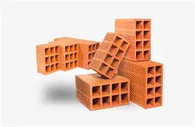

Tijolos rafinha.
'casa caiu tijolos subiu'
Sobre
Tijolos Rafinha A Tijolos Rafinha é uma marca reconhecida no setor da construção civil pela combinação de tradição, tecnologia e compromisso com o cliente. Atuando como referência no fornecimento de blocos cerâmicos e tijolos estruturais, a empresa busca atender desde pequenas reformas até grandes obras com confiança e eficiência. Qualidade Produzidos com argila selecionada e processos modernos de queima, os tijolos apresentam alta resistência e uniformidade. Garantem bom acabamento, fácil assentamento e excelente desempenho térmico e acústico. O controle de qualidade rigoroso assegura peças sem trincas, que não esfarelam e oferecem durabilidade superior. Preço A marca trabalha com preços acessíveis, equilibrando custo e benefício para diferentes perfis de obra. Oferece condições diferenciadas para compra em grande escala (milheiros) e mantém promoções sazonais para lojistas e construtores. Seu objetivo é ser competitiva, garantindo economia sem abrir mão da qualidade. Variedade A Tijolos Rafinha disponibiliza uma linha completa de opções: Tijolos baianos (6, 8 e 9 furos) – ideais para paredes internas. Tijolos estruturais – mais resistentes, indicados para obras que exigem sustentação. Tijolos maciços – usados em detalhes arquitetônicos, churrasqueiras e alvenaria aparente. Tijolos ecológicos (solo-cimento) – sustentáveis, sem queima, que permitem economia de argamassa e rapidez na construção. Diferentes dimensões e formatos, atendendo desde projetos residenciais até industriais.
Planos
tijolo baiano
- Tijolo de boa qualidade, porem barato.
R$67
tijolo estruturais
- Mais resistentes, indicados para obras que exigem sustentação.
R$100
tijolo maciços
- Sustentáveis, sem queima, que permitem economia de argamassa e rapidez na construção.
R$167